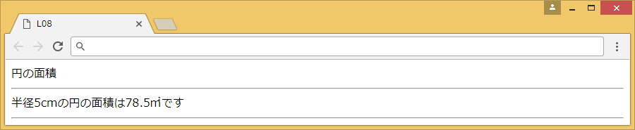

[Lesson 8] 関数（１）
関数を使用し、円の面積を算出するプログラムを作成しましょう。
[ 保存名 ] L08
[ プログラム仕様書 ] 円の面積（半径×半径×3.14）を算出する関数を作成する。
[ 実行イメージ ]

[コード入力手順]
① 指定した半径で円の面積を計算するen(n)関数を作成する。
・関数en(n)を作成する。
・面積を計算して、menseki変数に代入する。（半径＊半径＊3.14）
・関数の戻り値にmensekiを設定する。
② 変数iを用意し、半径を指定する。
・var i=5;
③ en( )関数を引数「i」で計算する。
＜ヒント＞→ en(i)
ポイント
■ 関数の作成
関数とは一連の処理をまとめて後で使えるようにしたもの。
処理単位ごとに関数を作成し、呼び出せるようにしておくと、メンテナンスも容易です。
関数の定義の書式は以下のとおりです。
function 関数名(引数){
処理;
return 戻り値;
}
処理;
return 戻り値;
}
■ 変数の呼び出し
関数は「変数名(引数)」で呼び出します。
例：en(i)
■ 関数の戻り値
関数には処理を実行するだけの関数と、処理を実行した後値を返す関数があります。
値を返す関数は帰ってくる値（戻り値）の設定が必要です。
例えば、今回のem( )関数は面積を戻り値としています。
答え
分からなかった場合などは答えを見てみましょう。
<script>
var i=5;
var menseki;
function en(n){
menseki=i*i*3.14;
return menseki;
}
en(i);
document.write("半径"+i+"cmの円の面積は"+menseki+"㎡です");
document.write("<hr />");
</script>